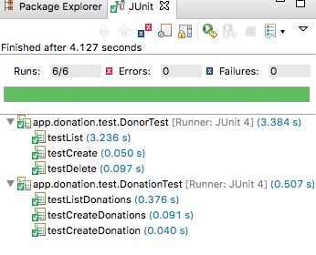

Complete the donation-play-service application - to include a reworked API supporting Donor->Donation relationship.
In Donation Labs 05 and 06 you completed and deployed a version of the donation-service and the donation-service-test projects. If you completed the exercises, you should had donor and donation endpoints defined something like this:
GET /api/donors DonationServiceAPI.getAllDonors
GET /api/donors/{id} DonationServiceAPI.getDonor
POST /api/donors DonationServiceAPI.createDonor
DELETE /api/donors/{id} DonationServiceAPI.deleteDonor
DELETE /api/donors DonationServiceAPI.deleteAllDonors
GET /api/donations DonationServiceAPI.getAllDonations
GET /api/donations/{id} DonationServiceAPI.getDonation
POST /api/donations DonationServiceAPI.createDonation
DELETE /api/donations/{id} DonationServiceAPI.deleteDonation
DELETE /api/donations DonationServiceAPI.deleteAllDonationsIf your tests are working successfully - something like this:

Then you can continue with your own project. If you wish to start afresh, these are the repos at this stage:
Just to be certain, perhaps clone these two repos, run the service and the the tests
To simplify further work on the API, we can refactor the DonationsAPI into two classes:
These contents are exactly the same as we will have had in DonationsAPI:
package controllers;
import java.util.List;
import com.google.gson.Gson;
import com.google.gson.JsonElement;
import models.Donor;
import play.mvc.Controller;
public class DonorsAPI extends Controller
{
static Gson gson = new Gson();
public static void getAllDonors()
{
List<Donor> Donors = Donor.findAll();
renderJSON(gson.toJson(Donors));
}
public static void getDonor(Long id)
{
Donor donor = Donor.findById(id);
if (donor == null)
{
notFound();
}
else
{
renderJSON(gson.toJson(donor));
}
}
public static void createDonor(JsonElement body)
{
Donor donor = gson.fromJson(body.toString(), Donor.class);
donor.id = null;
donor.save();
renderJSON(gson.toJson(donor));
}
public static void deleteDonor(Long id)
{
Donor donor = Donor.findById(id);
if (donor == null)
{
notFound("No Doner with ID" + id);
}
else
{
donor.delete();
renderJSON(gson.toJson(donor));
}
}
public static void deleteAllDonors()
{
Donor.deleteAll();
renderText("success");
}
}package controllers;
import java.util.List;
import com.google.gson.Gson;
import com.google.gson.JsonElement;
import models.Donation;
import play.mvc.Controller;
public class DonationsAPI extends Controller
{
static Gson gson = new Gson();
public static void getAllDonations()
{
List<Donation> donations = Donation.findAll();
renderJSON(gson.toJson(donations));
}
public static void getDonation (Long id)
{
Donation donation = Donation.findById(id);
renderJSON (gson.toJson(donation));
}
public static void createDonation(JsonElement body)
{
Donation donation = gson.fromJson(body.toString(), Donation.class);
Donation newDonation = new Donation (donation.amount, donation.method);
newDonation.id = null;
newDonation.save();
renderJSON (gson.toJson(newDonation));
}
public static void deleteDonation(Long id)
{
Donation donation = Donation.findById(id);
if (donation == null)
{
notFound();
}
else
{
donation.delete();
renderJSON (gson.toJson(donation));
}
}
public static void deleteAllDonations()
{
Donation.deleteAll();
renderText("success");
}
}This will require the Routes to be also modified:
GET /api/donors DonorsAPI.getAllDonors
GET /api/donors/{id} DonorsAPI.getDonor
POST /api/donors DonorsAPI.createDonor
DELETE /api/donors/{id} DonorsAPI.deleteDonor
DELETE /api/donors DonorsAPI.deleteAllDonors
GET /api/donations DonationsAPI.getAllDonations
GET /api/donations/{id} DonationsAPI.getDonation
POST /api/donations DonationsAPI.createDonation
DELETE /api/donations/{id} DonationsAPI.deleteDonation
DELETE /api/donations DonationsAPI.deleteAllDonationsRestart the application - and make sure all the tests still run:
Note that this refactoring had no effect on our DonationServiceProxy class:
public interface DonationServiceProxy
{
@GET("/api/donors")
Call<List<Donor>> getAllDonors();
@GET("/api/donors/{id}")
Call<Donor> getDonor(@Path("id") Long id);
@POST("/api/donors")
Call<Donor> createDonor(@Body Donor Donor);
@DELETE("/api/donors/{id}")
Call<Donor> deleteDonor(@Path("id") Long id);
@DELETE("/api/donors")
Call<String> deleteAllDonors();
@GET("/api/donations")
Call<List<Donation>> getAllDonations();
@DELETE("/api/donations")
Call<String> deleteAllDonations();
@GET("/api/donations/{id}")
Call<List<Donation>> getDonation(@Path("id") Long id);
@POST("/api/donations")
Call<Donation> createDonation(@Body Donation donation);
@DELETE("/api/donations/{id}")
Call<Donation> deleteDonation(@Path("id") Long id);
}which retains the original routes.
We can now introduce the OneToMany relationship in Donor:
package models;
import javax.persistence.CascadeType;
import javax.persistence.Entity;
import javax.persistence.OneToMany;
import java.util.ArrayList;
import java.util.List;
import play.db.jpa.Model;
@Entity
public class Donor extends Model
{
public String firstName;
public String lastName;
public String email;
public String password;
@OneToMany(cascade = CascadeType.ALL)
public List<Donation> donations = new ArrayList<Donation>();
public Donor(String firstName, String lastName, String email, String password)
{
this.firstName = firstName;
this.lastName = lastName;
this.email = email;
this.password = password;
}
}To verify that this works, we can change the data.yml file to reflect the relationship:
Donation(a):
amount : 210
method : paypal
Donation(b):
amount : 20
method : cash
Donation(c):
amount : 330
method : cash
Donation(d):
amount : 10
method : paypal
Donor(homer):
usaCitizen: true
firstName: Homer
lastName: Simpson
email: homer@simpson.com
password: secret
Donor(marge):
usaCitizen: true
firstName: Marge
lastName: Simpson
email: marge@simpson.com
password: secret
donations:
- a
- b
- c
Donor(lisa):
usaCitizen: true
firstName: Lisa
lastName: Simpson
email: lisa@simpson.com
password: secret
donations:
- d
Donor(bart):
usaCitizen: true
firstName: Bart
lastName: Simpson
email: bart@simpson.com
password: secret
Donor(maggie):
usaCitizen: true
firstName: Maggie
lastName: Simpson
email: maggie@simpson.com
password: secretRestart the app now - and explore the database directly to see if it has been set up as expected.
Don't run the tests yet - as they will no longer work.
To reflect the new relationship between donor and donation, we need to rework the routes:
GET /api/donors DonorsAPI.getAllDonors
GET /api/donors/{id} DonorsAPI.getDonor
POST /api/donors DonorsAPI.createDonor
DELETE /api/donors/{id} DonorsAPI.deleteDonor
DELETE /api/donors DonorsAPI.deleteAllDonors
GET /api/donations DonationsAPI.getAllDonations
DELETE /api/donations DonationsAPI.deleteAllDonations
GET /api/donors/{id}/donations DonationsAPI.getDonations
GET /api/donors/{id}/donations/{donationId} DonationsAPI.getDonation
POST /api/donors/{id}/donations DonationsAPI.createDonation
DELETE /api/donors/{id}/donations/{donationId} DonationsAPI.deleteDonationThe donors remain the same, but look carefully at how the donations are accessed.
DonorsAPI controller can remain as is, but we need to change the DonationsAPI. Replace the current one with this version:
package controllers;
import java.util.List;
import com.google.gson.Gson;
import com.google.gson.JsonElement;
import models.Donation;
import models.Donor;
import play.mvc.Controller;
public class DonationsAPI extends Controller
{
static Gson gson = new Gson();
public static void getAllDonations()
{
List<Donation> donations = Donation.findAll();
renderJSON(gson.toJson(donations));
}
public static void deleteAllDonations()
{
Donation.deleteAll();
renderText("success");
}
public static void getDonations (Long id)
{
Donor donor = Donor.findById(id);
renderJSON (gson.toJson(donor.donations));
}
public static void getDonation (Long id, Long donationId)
{
Donation donation = Donation.findById(donationId);
renderJSON (gson.toJson(donation));
}
public static void createDonation(Long id, JsonElement body)
{
Donor donor = Donor.findById(id);
Donation donation = gson.fromJson(body.toString(), Donation.class);
donation.id = null;
donor.donations.add(donation);
donor.save();
renderJSON (gson.toJson(donation));
}
public static void deleteDonation(Long id, Long donationId)
{
Donation donation = Donation.findById(donationId);
if (donation == null)
{
notFound();
}
else
{
donation.delete();
renderJSON (gson.toJson(donation));
}
}
}Some of the methods had additional parameters - look at createDonation for instance...
This is the project at this stage:
and its API is more or less complete.
We now switch our attention to the donation-service-test project.
The Proxy needs to be converted to use the new routes:
package app.donation.main;
import java.util.List;
import app.donation.model.Donation;
import app.donation.model.Donor;
import retrofit.Call;
import retrofit.http.Body;
import retrofit.http.DELETE;
import retrofit.http.GET;
import retrofit.http.POST;
import retrofit.http.Path;
public interface DonationServiceProxy
{
@GET("/api/donors")
Call<List<Donor>> getAllDonors();
@GET("/api/donors/{id}")
Call<Donor> getDonor(@Path("id") Long id);
@POST("/api/donors")
Call<Donor> createDonor(@Body Donor Donor);
@DELETE("/api/donors/{id}")
Call<Donor> deleteDonor(@Path("id") Long id);
@DELETE("/api/donors")
Call<String> deleteAllDonors();
@GET("/api/donations")
Call<List<Donation>> getAllDonations();
@DELETE("/api/donations")
Call<String> deleteAllDonations();
@GET("/api/donors/{id}/donations")
Call<List<Donation>> getDonations(@Path("id") Long id);
@GET("/api/donors/{id}/donations/{donationId}")
Call<Donation> getDonation(@Path("id") Long id, @Path("donationId") Long donationId);
@POST("/api/donors/{id}/donations")
Call<Donation> createDonation(@Path("id") Long id, @Body Donation donation);
@DELETE("/api/donors/{id}/donatinos/{donationId}")
Call<Donation> deleteDonation(@Path("id") Long id, @Path("donationId") Long donationId);
}And the DonationServiceAPI needs to be reworked to accommodate the new routes:
package app.donation.main;
import java.util.List;
import com.google.gson.Gson;
import com.google.gson.GsonBuilder;
import app.donation.model.Donation;
import app.donation.model.Donor;
import retrofit.Call;
import retrofit.GsonConverterFactory;
import retrofit.Response;
import retrofit.Retrofit;
public class DonationServiceAPI
{
private String service_url = "http://localhost:9000";
private DonationServiceProxy service;
public DonationServiceAPI()
{
Gson gson = new GsonBuilder().create();
Retrofit retrofit = new Retrofit.Builder().baseUrl(service_url)
.addConverterFactory(GsonConverterFactory
.create(gson))
.build();
service = retrofit.create(DonationServiceProxy.class);
}
public List<Donor> getAllDonors() throws Exception
{
Call<List<Donor>> call = (Call<List<Donor>>) service.getAllDonors();
Response<List<Donor>> donors = call.execute();
return donors.body();
}
public Donor getDonor(Long id) throws Exception
{
Call<Donor> call = (Call<Donor>) service.getDonor(id);
Response<Donor> donors = call.execute();
return donors.body();
}
public int deleteDonor(Long id) throws Exception
{
Call<Donor> call = service.deleteDonor(id);
Response<Donor> val = call.execute();
return val.code();
}
public int deleteAllDonors() throws Exception
{
Call<String> call = service.deleteAllDonors();
Response<String> val = call.execute();
return val.code();
}
public Donor createDonor(Donor newDonor) throws Exception
{
Call<Donor> call = (Call<Donor>) service.createDonor(newDonor);
Response<Donor> returnedDonor = call.execute();
return returnedDonor.body();
}
public List<Donation> getAllDonations() throws Exception
{
Call<List<Donation>> call = (Call<List<Donation>>) service.getAllDonations();
Response<List<Donation>> donations = call.execute();
return donations.body();
}
public List<Donation> getDonations(Long id) throws Exception
{
Call<List<Donation>> call = (Call<List<Donation>>) service.getDonations(id);
Response<List<Donation>> donations = call.execute();
return donations.body();
}
public Donation createDonation(Long id, Donation newDonation) throws Exception
{
Call<Donation> call = (Call<Donation>) service.createDonation(id, newDonation);
Response<Donation> returnedDonation = call.execute();
return returnedDonation.body();
}
public int deleteDonation(Long id, Long donationId) throws Exception
{
Call<Donation> call = service.deleteDonation(id, donationId);
Response<Donation> val = call.execute();
return val.code();
}
public int deleteAllDonations() throws Exception
{
Call<String> call = service.deleteAllDonations();
Response<String> val = call.execute();
return val.code();
}
}The DonorTest class should require no further changes. However, DonationTest will need to be adapted:
package app.donation.test;
import static org.junit.Assert.*;
import java.util.List;
import org.junit.After;
import org.junit.Before;
import org.junit.Test;
import app.donation.main.DonationServiceAPI;
import app.donation.model.Donation;
import app.donation.model.Donor;
public class DonationTest
{
private Donor marge = new Donor ("marge", "simpson", "homer@simpson.com", "secret");
private DonationServiceAPI donationServiceAPI = new DonationServiceAPI();
@Before
public void setup() throws Exception
{
marge = donationServiceAPI.createDonor(marge);
}
@After
public void teardown() throws Exception
{
donationServiceAPI.deleteDonor(marge.id);
}
@Test
public void testCreateDonation () throws Exception
{
Donation donation = new Donation (123, "cash");
Donation returnedDonation = donationServiceAPI.createDonation(marge.id, donation);
assertEquals (donation, returnedDonation);
donationServiceAPI.deleteDonation(marge.id, returnedDonation.id);
}
@Test
public void testCreateDonations () throws Exception
{
Donation donation1 = new Donation (123, "cash");
Donation donation2 = new Donation (450, "cash");
Donation donation3 = new Donation (43, "paypal");
Donation returnedDonation1 = donationServiceAPI.createDonation(marge.id, donation1);
Donation returnedDonation2 = donationServiceAPI.createDonation(marge.id, donation2);
Donation returnedDonation3 = donationServiceAPI.createDonation(marge.id, donation3);
assertEquals(donation1, returnedDonation1);
assertEquals(donation2, returnedDonation2);
assertEquals(donation3, returnedDonation3);
donationServiceAPI.deleteDonation(marge.id, returnedDonation1.id);
donationServiceAPI.deleteDonation(marge.id, returnedDonation2.id);
donationServiceAPI.deleteDonation(marge.id, returnedDonation3.id);
}
@Test
public void testListDonations () throws Exception
{
Donation donation1 = new Donation (123, "cash");
Donation donation2 = new Donation (450, "cash");
Donation donation3 = new Donation (43, "paypal");
donationServiceAPI.createDonation(marge.id, donation1);
donationServiceAPI.createDonation(marge.id, donation2);
donationServiceAPI.createDonation(marge.id, donation3);
List<Donation> donations = donationServiceAPI.getDonations(marge.id);
assertEquals (3, donations.size());
assertTrue(donations.contains(donation1));
assertTrue(donations.contains(donation2));
assertTrue(donations.contains(donation3));
donationServiceAPI.deleteDonation(marge.id, donations.get(0).id);
donationServiceAPI.deleteDonation(marge.id, donations.get(1).id);
donationServiceAPI.deleteDonation(marge.id, donations.get(2).id);
}
}This is the final version of donation-service-test:
All test should now pass.
If you have been cloning the repos - make sure both repos are on branch 'revision2'.
Branch 'revision2' on each of these repos:
Deploy donation-service to heroku - and adjust donation-service-test so that is tests the deployed version.
The url in DonationServiceAPI will need to be changed to your heroku app:
public class DonationServiceAPI
{
private String service_url = "http://localhost:9000";
private DonationServiceProxy service;
...